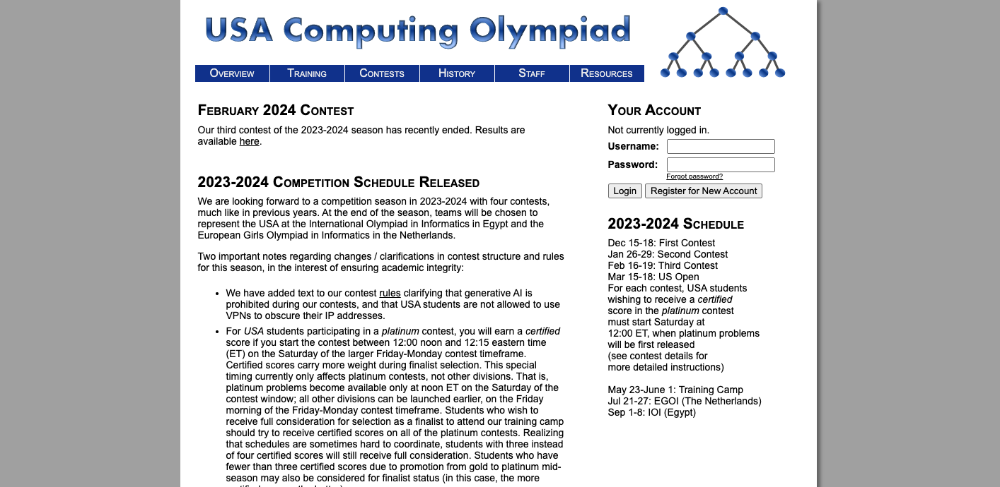
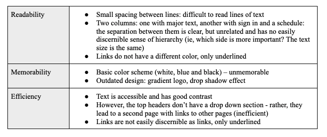
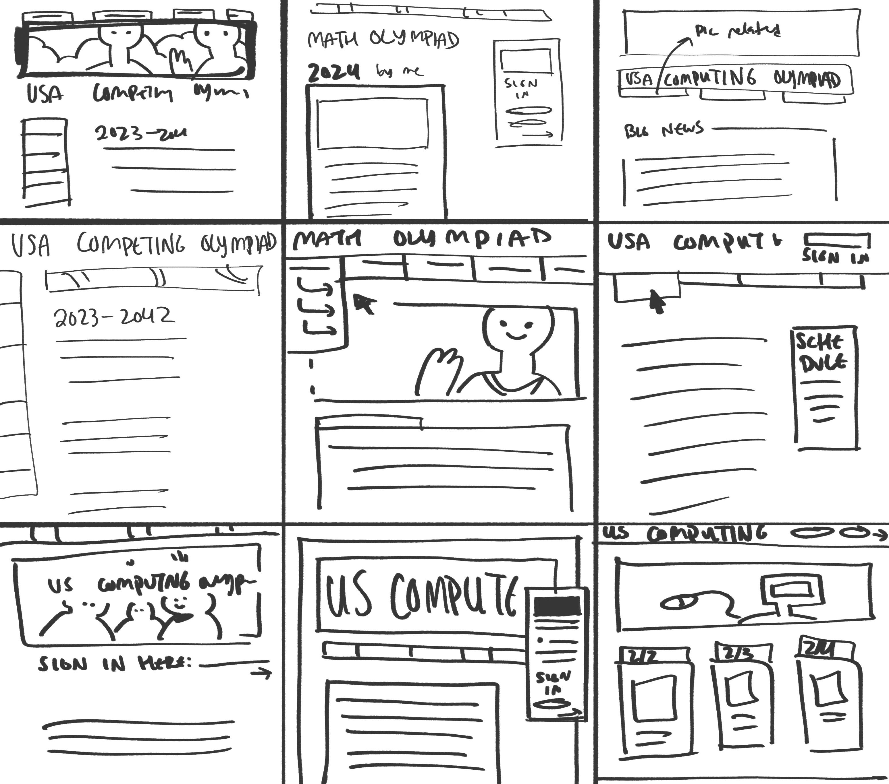
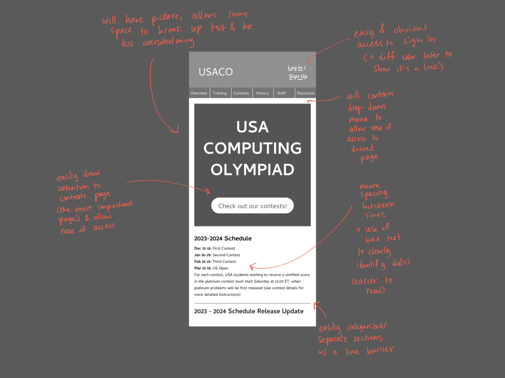
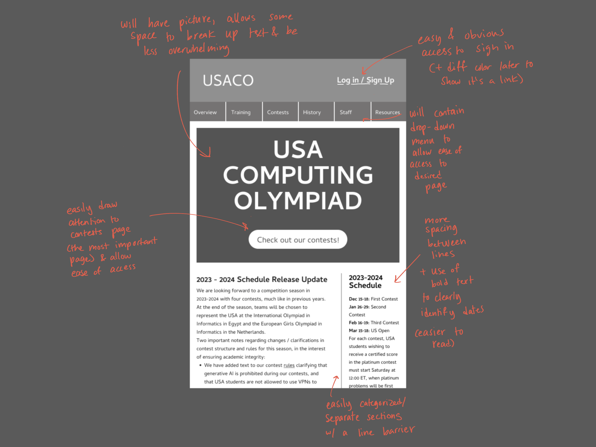
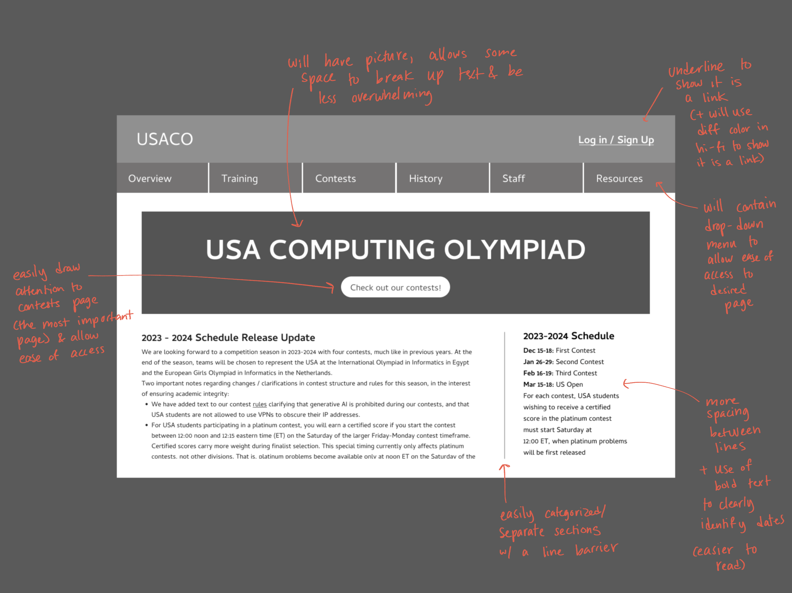

Context
When choosing a website to redesign, I wanted to make sure the page I chose not only needed a visual update, but was also actually relevant to me and my peers. After asking around, my friend led me to the USA Computing Olympiad website -- he had participated in one of their contests when he was younger but the outdated design of their site always stuck with him. After taking a look, I agreed - the font and overall brand is very simplistic but without any real personality, the paragraph’s line spacing is small and makes the text difficult to read, and the separation of content is difficult to discern at a first glance. Because many young adults/teenagers would be using the site as a means of looking at contests to enter, I wanted to redesign the website not only for accessibility but also to be inviting while easy to navigate. I jotted down some initial thoughts on what to improve:
In terms of accessibility, WebAIM mentioned that the website has no heading structures – visually I can see some headings through bolded and larger text, but in the HTML the text isn’t quantified as such, and might cause problems for those needing assistive technology. There was also a noscript element present, which I couldn’t see on my own without going through the code, but WebAIM states that content in a noscript may not be accessible to those using screen readers.
There was also something about the page set to automatically refresh the page, which I didn’t fully understand but could impact one’s usability of the site in the case of suddenly losing one’s location when the page refreshes or something similar.
Sketches
First, I started with some quick sketches of potential redesign layouts: 
Then, a final quick sketch combining some of the elements I liked for my quick sketches:

Low-Fidelity Wireframing
From there, I do some quick wireframes in Figma, annotating for the changes I'd want and how they'd address the issues mentioned above.   
Style Guide
Now I make a style guide to have a consistent font, size, and color scheme as I go into designing the high-fi versions of my redesign. I chose a cool, blue and green color scheme in order to maintain the scientific-tech aesthetic, but hopefully in a way that seems more approachable than the gradients and greys of the existing page. I also used JetBrains Mono as the key font, which has a pre-existing association with programming and tech, but isn't distinct enough to be offsetting.
High-Fidelity Designs
Now I add color and images to the designs, so I can get a look at what I image the final product to look like.


Final Redesign
Finally, you can find the link to my redesign here.As full disclosure, some of the responsiveness of the formatting is a bit funky, especially for the header photo. I wanted the header photo's size to match the size of the website title and button, but having it inherit the same size was a bit weird, and I had to do a lot of weird manual stuff behind the scenes. So it's not perfect, but this is also my first time using HTML so I'm pretty proud of what I've managed to accomplish!